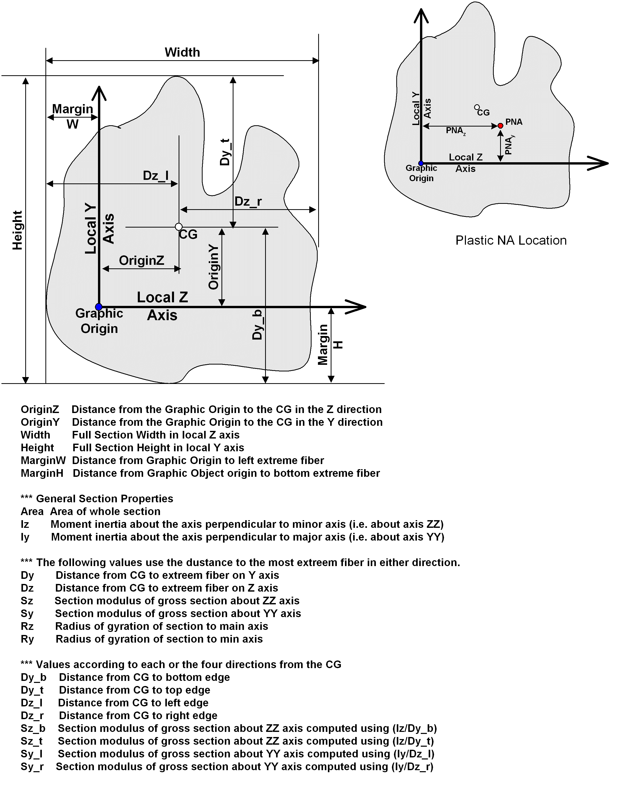

Shape Geometry Nomenclature
Cited from Shape Properties.
Every shape defined in the Input Plate Library.html, Input Standard Shape Library, or Input Built up Shape Library libraries have the following parameters calculated. These values are printed in the Section Properties report file. The location of the Graphic Origin is arbitrary and documented in the help graphic for each type of shape used by BRIDG.
